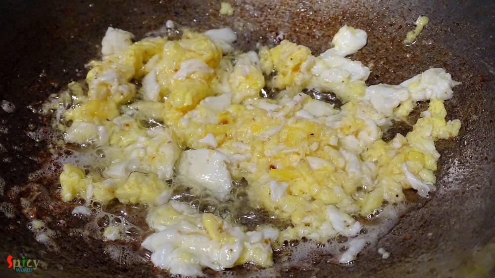
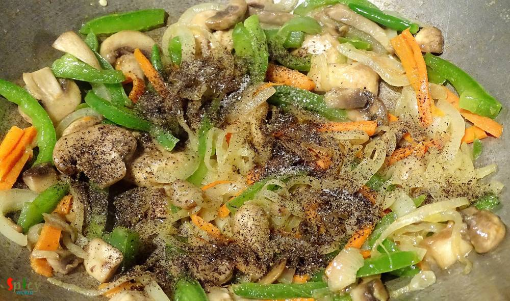

Simple and Easy Recipes
Mix Hakka Noodles / Mix Chowmin
© 2016 Spicy World, Published on: Jan 21, 2016
Almost every one has a slight weakness over chinese food. Taste and flavour of their food is totally unique. In Kolkata, many street food joints sell chinese food like various types of chowmin, chilli chicken, manchurian, lollipops etc. They all tastes really good. Today I am sharing the delicious recipe of 'mix Hakka noodles'. The dish has lots of vegetables, chicken and also egg, that's why the name is 'mix chowmin'. You can also add your choice of protiens like shrimp, tofu, pork, beef etc. This recipe is very simple and easy. You have to try this in your kitchen.

Ingredients
- 1 small pack of hakka noodles.
- 1 clove of garlic finely chopped.
- 1 cup of thinly sliced mix veggies (onion, carrots, capsicum, beans, mushrooms etc).
- 2 green chilies.
- 1/2 cup of minced chicken.
- 2 eggs.
- Salt.
- 4 Tablespoons of white oil.
- Pinch of msg / ajinomoto.
- 1/2 Teaspoons of vinegar.
- 2 Teaspoonss of chilli sauce.
- 1 Teaspoons of sesame oil.
- 2 Teaspoonss of black pepper powder.
- Some chopped spring onion.

Steps
Boil 2-3 cups of water in a saucepan.
Add the hakka noodles. Boil it till become firm to bite.

After that drain the water completely and put the noodles under cold water immediately for a minute.
Again drain the water and keep aside.
Heat 1 Tablespoon of oil in a pan.
Add minced chicken, pinch of salt and black pepper powder.
Mix everything for 4-5 minutes in high flame and remove it from the pan.
Again heat 1 Tablespoon of oil.
Break 2 eggs in hot oil with pinch of salt and pepper.
Scramble the eggs properly, fry for 2-3 minutes and remove from the pan.
Now heat the remaining oil.
Add chopped garlic in hot oil. Saute for 30 seconds.
Then add all the veggies with pinch of salt.
Fry everything for 5 minutes in high flame.
Then add msg, vinegar, pepper powder and more salt. Mix again.
Then add the boiled noodles. Toss everything very well.
Now add green chilies and chilli sauce.
Then add sesame oil, mix the entire thing in high flame for 5 minutes.
Add that fried chicken and scrambled eggs to the noodles. Mix well.
Lastly add some chopped spring onion. Mix once again.
Check the seasoning and then turn off the heat.
Your mix hakka noodles is ready ...
Enjoy this hot with some chilli sauce ...
")